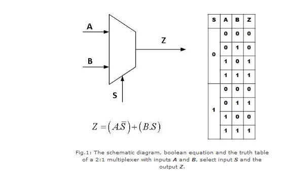
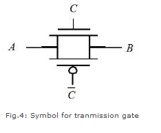

Shakshat Virtual Lab 
INDIAN INSTITUTE OF TECHNOLOGY GUWAHATI
The aim of this experiment is to design and plot the characteristics of a 4x1 digital multiplexer using pass transistor and transmission gate logic.
Introduction
A multiplexer or mux is a combinational circuits that selects several analog or digital input signals and forwards the selected input into a single output line. A multiplexer of 2n inputs has n selected lines, are used to select which input line to send to the output.

Figure 2 shows how a 4:1 MUX can be constructed out of two 2:1 MUXs.

Design using pass-transistor logic
A multiplexer can be designed using various logics. Fig.3 shows how a 2:1 MUX is implemented using a pass-transistor logic.GS.

The pass-transistor logic attempts to reduce the number of transistors to implement a logic by allowing the primary inputs to drive gate terminals as well as source-drain terminals. The implementation of a 2:1 MUX requires 4 transistors (including the inverter required to invert S), while a complementary CMOS implementation would require 6 transistors. The reduced number of devices has the additional advantage of lower capacitance.
Design using transmission gate logic
A transmission gate is an electronic element and good non mechanical relay built with CMOS technology. It is made by parallel combination of nMOS and pMOS transistors with the input at the gate of one transistor (C) being complementary to the input at the gate () of the other. The symbol of a transmission gate is shown below in fig.4.

The transmission gate acts as a bidirectional switch controlled by the gate signal C. When C=1, both MOSFETs are on, allowing the signal to pass through the gate. In short, A=B, if C=1. On the other hand, C=0, places both transistors in cut-off, creating an open circuit between nodes A and B. Fig.5 shows the implementation of a 2:1 MUX using transmission gate logic.

Here, the transmission gates selects input A or B on the basis of the value of the control signal S. When S=0, Z=A and when S=1, Z=B.